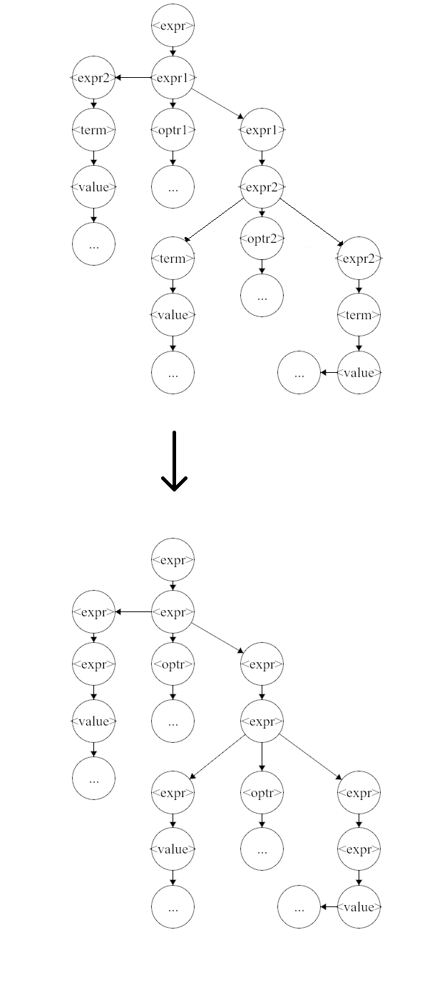
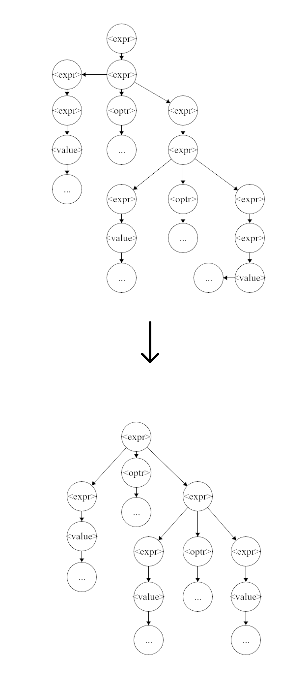
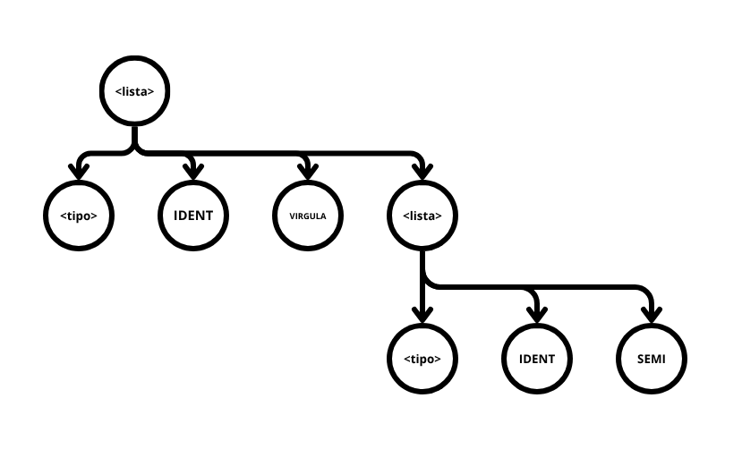
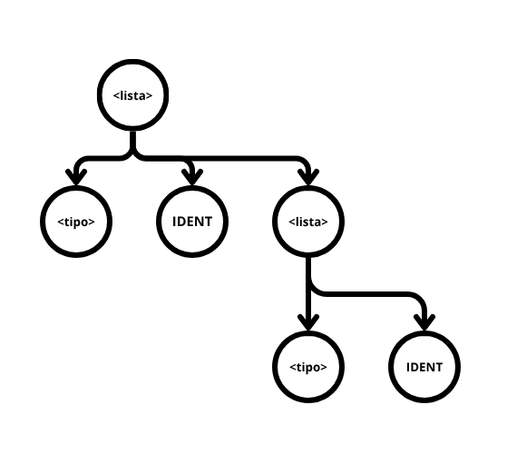
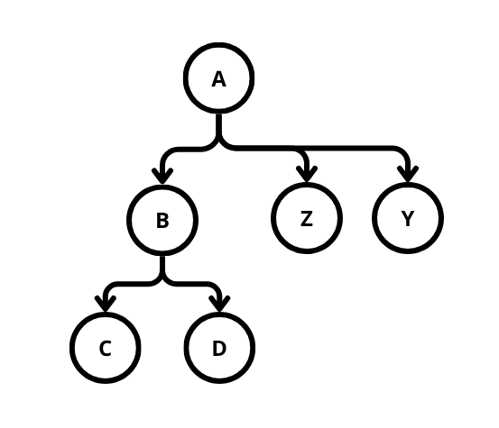
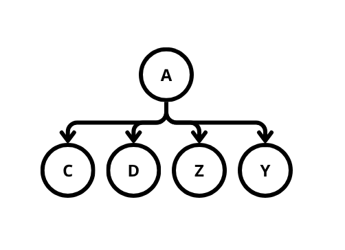
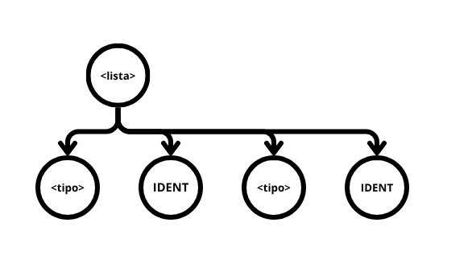

Árvore Sintática em Memória
Warning
A biblioteca ainda está em desenvolvimento e atualmente suporta apenas Rust e C++. A API esta sujeita a mudar até novembro de 2026.
Árvore abstrata
Tradicionalmente o processamento semântico e geração de código feito por um compilador
acontece via o uso das ações semânticas; identificadores numéricos presentes na gramática que
realizam callbacks a funções no compilador quando identificadas pelo analisador sintático
(no Web GALS tais funções sendo escritas dentro do método executeAction() da classe Semântico).
Este método é simples na implementação, porém restringe a complexidade do compilador já que em nenhum momento da compilação o compilador tem acesso completo a árvore sintática derivada pelo analisador sintático.
De fato, no uso das ações semânticas não só se limita as informações disponíveis ao compilador (somente Tokens associados a uma ação semântica são enviados à classe Semântica), como conjuntos de informações outrora sequenciais são quebrados em múltiplas chamadas de função (como no caso de lista de identificadores em uma chamada de função, ou uma expressão binária).
Uma alternativa ao uso do sistema de ações semânticas é guardar a árvore sintática derivada pelo analisador sintático na memoria e processa-la posteriormente. Esta árvore dada pelo analisador denomina-se Árvore Sintática Concreta, já que ela representa precisamente o que o analisador aceitou. No momento que se modifica uma árvore sintática concreta, ela se torna uma Árvore Sintática Abstrata (AST), já que ela representa o programa, mas não necessariamente o que o analisador sintático aceitou. Por questões de brevidade este documento ira referir ambas como abstrata.
O Web GALS suporta na sua geração de código uma biblioteca para a criação e manipulação de árvores sintáticas abstratas, com múltiplas transformações pré implementadas prontas ao uso.
Note
A biblioteca vem desativada por padrão, e é ativada no menu de configurações do Web GALS na secção sintática.
Ao habilitar a biblioteca, a função parse() da classe Sintático para de executar as ações semânticas e passa
a retornar a árvore sintática. Por questões de compatibilidade, caso a gramática possua ações semânticas, essas
são postas na árvore concreta em suas devidas posições, na qual podem ser processadas da maneira tradicional
posteriormente via uma transformação, exemplificado em Rust e C++:
try {
auto tree = syn.parse(&lex);
Node::transform(tree, [&sem](auto& n) {
auto kind = n->getKind();
if (kind.first == NodeKind::SemanticAction) {
auto actlex = n->getActionLex();
auto a = std::get<int>(kind.second);
sem.executeAction(a + 1, actlex);
}
});
} catch ( ... ) {
...
}
#![allow(unused)]
fn main() {
let mut tree = syn.parse()?;
tree.try_transform(&mut |n| {
if let NodeKind::SemanticAction(a) = n.get_kind() {
sem.execute_action((*a + 1) as u32, n.get_actionlex().expect("token"))?;
};
Ok(())
})?;
}Transformações são o coração desta metodologia. Uma transformação é uma função executada em todos os nós da árvore seguindo uma ordem específica (a transformação acima sendo pós-ordem em profundidade).
Com o uso das transformações é possível simplificar e reorganizar a árvore abstrata, adicionar informações a ela (como informações de tipagem), ou até mesmo usa-la de referência para a geração de código.
Classe Node
A classe Node é a classe que representa os nós da árvore abstrata, e é o tipo retornado pela função parse().
De dados, elas possuem o parâmetro kind, a variante (tagged union/enum) de que tipo de nó é esse, tendo quatro
opções: terminal, não-terminal, ação semântica e nó customizado; e children, sua lista de filhos. Métodos estão
disponíveis para acessar e modificar ambos.
Note
Devido a grande quantidade de código presente nesta classe, vezes quatro, uma para cada implementação, somente suas descrições estão presentes neste documento. Peço que busquem protótipos de função no próprio código fonte dos arquivos gerados.
Transformações Prontas
A biblioteca vem com seis transformações parametrizáveis que permitem modificar a árvore, no intuito de simplifica-la para visualização e posterior processamento.
Transformção assimilate
Protótipo assimilate(newkind: NodeKind, similars: List<NodeKind>).
Esta transformação ira percorrer a árvore procurando por
nós que se assemelham a qualquer NodeKind presente em similars e, caso ache, os morfará para newkind. Esta
transformação é útil para padronizar nós que representam a mesma informação. Por exemplo, dado a gramática:
<expr> ::= <expr1>;
<expr1> ::= <expr2> | <expr2> <optr1> <expr1>;
<expr2> ::= <term> | <term> <optr2> <expr2>;
<optr1> ::= ...;
<optr2> ::= ...;
<term> ::= <value> | OPEN <expr> CLOSE;
as regras <expr>, <expr1>, <expr2> e <term> representam as mesmas informações, mas necessitam ser não-terminais diferentes
por questões de precedência e ambiguidade. As regras de operador sofrem um problema parecido.
as transformações assimilate(<expr>, [<expr1>, <expr2>, <term>]) e transformação assimilate(<optr>, [<optr1>, <optr2>])
irão padronizar a árvore abstrata como mostrado abaixo:

Note
A função
assimilate(), e todas as transformações prontas, esperam argumentos do tipo NodeKind. Por exemplo, em Rust, uma das transformações acima seria escrita da seguinte forma:tree.assimilate(NodeKind::NonTerminal(NonTerm::nt_expr), &[ NodeKind::NonTerminal(NonTerm::nt_expr1), NodeKind::NonTerminal(NonTerm::nt_expr2), NodeKind::NonTerminal(NonTerm::nt_term), ])A enumeração
NonTermestá disponível no arquivo de constantes gerado com o projeto, junto comTokenIdpara terminais.Para C++, o tipo
NodeKindé quebrado em duas partes, onde funções como a anterior aceitamstd::pair<NodeKind, NodeData>no lugar deNodeKind, comNodeKindsendo uma enumeração eNodeDatasendo umstd::variantcom os dados da enumeração, por exemplo:Node::assimilate( tree, std::make_pair(NodeKind::NonTerminal, NonTerm::nt_expr), std::vector<std::pair<NodeKind, NodeData>> { std::make_pair(NodeKind::NonTerminal, NonTerm::nt_expr1), std::make_pair(NodeKind::NonTerminal, NonTerm::nt_expr2), std::make_pair(NodeKind::NonTerminal, NonTerm::nt_term ), } );
Transformação squash
Protótipo squash(target: NodeKind).
Esta transformação procura por nós similares a target nos quais tem somente
um nó filho e, caso o seu nó filho tenha o mesmo nodekind que seu pai, o filho é deletado, com os netos sendo transferidos para
o pai, eg.: A tem B tem C,D,E → A tem C,D,E; B deletado. Esta transformação é util em uso conjunto com a transformação anterior
para deletar nós reduntantes na árvore. Por exemplo, digamos que as padronizações de expressão anteriores foram executadas:
há uma grande chance que “cadeias” de <expr> aninhadas umas dentro das outras tenham sido formadas. A transformação squash() ira
“esmagar” estas cadeidas em um nó só. A figura abaixo exemplifica:

Transformação filter
Protótipo: filter(target: NodeKind, removelist: List<NodeKind>).
Esta transformação remove qualquer filho de target que esteja presente
em removelist. Ela é útil para remover terminais que não apresentam significado semântico após a analise sintática, como pontos-vírgula
ou parênteses. Por exemplo, em uma lista de identificadores associados a tipos, é muito provavel que os elementos sejam separados por
vírgula, ou algo similar, porém somente os identificadores e os tipos apresentam significado semântico.
Dado a seguinte gramatica:
<lista> ::= <tipo> IDENT SEMI | <tipo> IDENT VIRGULA <lista>;
e a seguinte possível derivação desta gramática:

executar:
Node::filter(
tree,
std::make_pair(NodeKind::NonTerminal, NonTerm::nt_lista),
std::vector<std::pair<NodeKind, NodeData>> {
std::make_pair(NodeKind::Terminal, new Token(TokenId::t_VIRGULA, "", 0)),
std::make_pair(NodeKind::Terminal, new Token(TokenId::t_SEMI, "", 0)),
}
)
Note
No C++, todas as transformações efetuam
deletedosTokens*recebidos via argumento.
irá deletar as virgulas e pontos-vírgulas da árvore abstrata, como da seguinte forma:

Transformação flatten
Protótipo: flatten(target: NodeKind).
Esta transformação é usada para deletar um nó, trocando-o por seus filhos. Por exemplo, se um nó A tem um nó B, no qual o nó B tem filhos C e D, executar flatten(B) deletará B e fará com que C e D sejam filhos de A, eg.:

vira

Transformação enlistify
Protótipo: enlistify(target: NodeKind).
Esta transformação é usada para linearizar listas recursivas. Ele checa
se o nó raiz e seu último filho tem o mesmo tipo e, se for esse o caso, executa
flatten() em tal filho.
Por exemplo, se pegarmos o exemplo da transformação filter() e executarmos enlistify(<lista>) o resultado será:

Transformações Customizadas
As transformações são implementadas via a chamada do método correspondente em qualquer nó da árvore, dando uma função lambda como argumento (que realizará a operação da transformação). A função lambda em sí recebe um único argumento: o nó que está sendo atualmente processado. A função de transformação então irá percorrer todos os nós filhos do nó na qual a transformação iniciada, executando a função lambda fornecida tende eles de argumento.
O primeiro e principal método de transformação fornecida é, nomeada de acordo, transform(t), específica com código
Rust abaixo:
#![allow(unused)]
fn main() {
pub fn transform<F>(self: &mut Box<Self>, t: &mut F)
where
F: FnMut(&mut Box<Self>),
{
self.children.iter_mut().for_each(|c| c.transform(t));
t(self);
}
}Esta função percorre a árvore em profundidade com chamada pós ordem, ou seja, nós mais profundos primeiro, com a sua função lambda sendo executada após chegar ao final da cadeia de nós, ou “na volta”.
A função transformPreorder(t) também é em profundidade, mas executa pré ordem, ou seja, executa “na ida”:
#![allow(unused)]
fn main() {
pub fn transform_preorder<F>(self: &mut Box<Self>, t: &mut F)
where
F: FnMut(&mut Box<Self>),
{
t(self)
self.children.iter_mut().for_each(|c| c.transform_preorder(t));
}
}A função transformDual(t) executa a lambda duas vezes, uma vez pré ordem e outra pós ordem. Tal operação é necessária
para a correta implementação da tipagem e escopagem do programa, já que importa para implementação de ambos se você
esta “entrando” ou “saindo” de um nó.
#![allow(unused)]
fn main() {
pub fn transform_dual<F>(self: &mut Box<Self>, t: &mut F)
where
F: FnMut(&mut Box<Self>, bool),
{
t(self, false);
self.children.iter_mut().for_each(|c| c.transform_dual(t));
t(self, true);
}
}A versões de C++ dessas funções são métodos estáticos devido ao fato de que o C++ não permite especializar a variável this
a qualquer tipo além de T*, porém o design da biblioteca requer um valor boxeado std::unique_ptr<T> como valor this, eg.:
// Equivalente C++ de transform(t)
static void transform(std::unique_ptr<Node>& self, std::function<void(std::unique_ptr<Node>&)> t);
// Então é chamada com
Node::transform(no, ...);
/* Ao invéz de
no->transform(...);
*/
TODO nó customizado